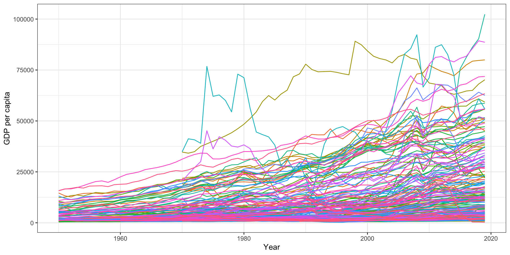

Analysis of IR
PS 1599 | Week 3: Technology and Sustainbility
University of Pittsburgh
Administration
Office hours + meetings
Emails
Website
Question?
What did we talk about last time?
Plan for today
In theory:
Welfare \(\leftarrow\) Development
Development \(\leftarrow\) Technology
Thus: technology \(\checkmark\)
Evidence #1: Neolithic revolution
Today: evidence #2, Industrial revolution(s)
Today/next time: when technology goes too far
2. Industrial revolution
Misnomer…
Period of economic, social, political transformations
Shift from agriculture to industry
1st Industrial rev: ~1760-1830 (UK)
2nd Industrial rev: ~1870-1914
Since then: 3rd and 4th IR
Enabled by new energy tech: steam, spinning jenny, etc
England
| 1500 | 1700 | 1900 | 1950 | |
|---|---|---|---|---|
| Calories | 1.8k | 2.2k | 3k | 3.1k |
| Life expectancy | 34 | 38 | 46 | 69 |
| Location | Rural | Rural | Rural | Urban |
| Literacy rate | 5-15% | ~50% | 90%+ | 95%+ |
| Cities >500k (world) | 2 | 7 | 44 |
What makes countries/regions
grow (economically)?
Types of growth
Growth (and development) can happen in four ways
Smith-ian growth: market expansion
Solow-ian growth: capital accumulation (machines, etc.)
Scale growth: more people, division of labor
Schumpetarian growth: technological disruptions
#1 and #2 limited potential (cannot ‘rediscover’ China…)
#3 helps but is slow
#4 is key
Context: Medieval times and Renaissance
Until 1600s: no clear trend in (median) living standards
Does not mean stability (eg Black Death:~-50%)
Does not mean stagnation
Trade (Smith-ian): global trade networks
Capitalism (Solow-ian): banking, accounting, money
Technology: agri, paper, medical science, universities
But few permanent changes
1600s
Change in W Europe starting around 1600s (Enlightenment)
Expansion of regional+global markets (goods, finance)
Growth of science: physics, statistics, philosophy
Development of modern state (property rights+law)
But still little change in welfare
Mokyr (2018)
1st Industrial revolution
Schumpetarian process
Starts in UK, 1760s-1830s (spreads later)
Rapid productivity growth (output per worker/year)
Three steps
Tech change in small sectors (industrialization via mechanization): cotton, iron, etc.
These sectors become more important overall
After decades: technology spills over to other sectors
Mokyr (2018)
Broader view
Not just about goods. Transformation…
Local to impersonal markets (“social change” school; Polanyi)
Local to national economies (“macroeconomic” school; Kuznets)
Household prod to firms (“industrial organization” school; Marx)
Technology for labor and capital (“technology” school; Landes)
From Austen to Dickens…
Deep causes
Why UK 1760s? Mystery! Hypotheses:
“Culture” (Max Weber, etc.)? But Belgium…
Colonies? Small and poor…
Political institutions? But Netherlands…
Energy? Netherlands vs. Belgium…
Critical role played by changes in
Agriculture: weaker demand for workers
Industry: stronger demand for consumer goods
Technology
Major consequences
Short term
Period of low growth (!)
Low wages (!) and urban poor (“proletariat”)
Long term
Improvements in life quality
Rise in living standards, esp among poor
Decline of rural world
Expansion of public services (schools, public health)
2nd Industrial revolution
Pause of innovation after 1820s
Around 1870s until WWI:
2nd generation of innovations
Transportation infrastructures (trains)
Energy infrastructures (eg grid) for mass production
What were the consequences
of transportation innovations?
World is becoming small

Isochrome map of US. Source: Atlas of the historical geography of the United States

Isochrome map of France
Some consequences
Labor market. Eg:
UK w/ train station \(\rightarrow\) pop growth + shift male workers away from agriculture
Germany: train tracks \(\rightarrow\) pop growth for bigger parishes
Erasure of local culture. Eg France: 50% of pop doesn’t speak French in 1789
Urbanization: working class, marxism, demand for social protection, education
3rd and 4th Industrial revolutions
New phases of transformation of societies
3rd IR: “digital” revolution (~1960s onward)
4th IR: “cyber” revolution: AI, Internet of Things, etc.
Technology is key
Energy services
Computers
GDP/capita since 1950
GDP per capita. Figure: Aklin. Data source: Penn World Tables.
Challenges
- Are technological innovations slowing down?
Worry about stagnation
Challenge measuring growth; GDP is not adequate
- Are technologies hurting us?
Worry about sustainability
Unprecedented risks of disaster
Conclusion
IR = unprecedented levels of welfare
Diff with past: few cases of backsliding
Doesn’t mean everything is great…
Inequality across/within ctries
Hedonic treadmill
Yet: would you trade your seat with anyone in the past?
Bigger problems: what’s next?
Negative side effects of tech
Will growth stop?
Questions?
aklin@pitt.edu
Source for title page painting: Quentin Matsys, The Money Changer and His Wife